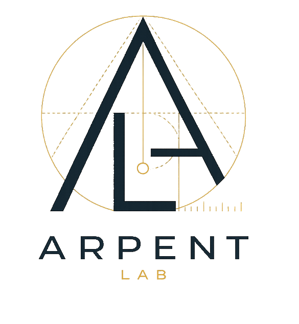

Sobriété
Un périmètre étroit. La technologie utile au besoin, rien de plus.
Laboratoire européen d’IA · Paris
Arpent cadre, construit et mesure des systèmes d’IA spécialisés pour une tâche métier précise. Audit, prototype mesuré et intégration pour les PME et ETI européennes.
Premier échange sous 48 h · contact@arpent.ai

Pas de résultat maquillé en démonstration.
Notre position
Un périmètre étroit. La technologie utile au besoin, rien de plus.
Une baseline, une métrique et un seuil décidés avant de construire.
Choix d’hébergement, traçabilité et conformité adaptés à vos contraintes européennes.
Services
Chaque mission a une sortie concrète et un critère d’arrêt. Le service finance notre R&D sans devenir une collection de POC sans lendemain.
Cartographie des données et processus, cas d’usage priorisés, risques et feuille de route exécutable.
Un cas d’usage livré, branché sur vos données et vos outils, avec protocole de mesure et décision de mise en production.
Comprendre ce qui fonctionne, faire émerger les bons cas d’usage et donner un cadre commun aux décisions IA.
L’audit de cadrage s’inscrit dans les dispositifs publics d’accompagnement à la data et à l’IA : une part substantielle de son coût est prise en charge pour les entreprises éligibles.
Méthode Arpent
Notre usine interne, KERN, capitalise les composants, les protocoles et les apprentissages utiles. Chaque problème reste traité pour ce qu’il est : unique.
Observer la décision métier, les données et les contraintes réelles.
Fixer baseline, métrique, seuil et coût avant le prototype.
Tester hors échantillon. Documenter limites et incertitude.
Mettre en service si — et seulement si — le seuil est atteint.
Produit
Quand une preuve répond à un besoin qui revient à chaque campagne, nous la transformons en produit. Premier terrain : l’agriculture, où deux contraintes se répètent. Anticiper la récolte, et absorber l’administratif réglementaire.
Fluidifier les obligations réglementaires et administratives des exploitants : registre phyto électronique obligatoire au 1er janvier 2027, pré-déclaration PAC, alertes de conformité.
Estimer la production de blé avant la collecte, du département à la parcelle, mesurée contre les statistiques publiques Agreste. Alimenté par les données parcellaires consolidées via le volet agentique : c'est le moat.
Premier produit · Coopératives & négoces céréaliers
Un agriculteur français consacre 9 à 15 heures par semaine à l'administratif. Le registre phytosanitaire devient électronique et obligatoire au 1er janvier 2027. La pré-déclaration PAC revient chaque printemps. Ceres pré-remplit, contrôle la conformité, alerte sur les échéances. Le fermier valide en 5 minutes au lieu de 2 heures. La coopérative pilote la conformité de ses adhérents en agrégat, sans voir le détail parcellaire individuel.
DOCTRINE Deux faces, un seul produit. Le volet agentique ouvre la porte par la douleur administrative. Ceres Prev valorise les données parcellaires consolidées. C'est ce qui rend Ceres défendable.
Cas bien cadrés
Nous refusons les plateformes fourre-tout. Nous cherchons le plus petit système qui améliore réellement une décision ou un flux de travail.
Prévoir un volume, un risque ou un délai avec incertitude et référence comparative.
Sortie : score, intervalle, alerte ou API.Interroger un corpus métier en conservant sources, droits d’accès et limites de réponse.
Sortie : réponse citée, dossier ou contrôle.Automatiser une séquence bornée entre vos documents, votre équipe et vos outils. Premier chantier : le registre phytosanitaire électronique, obligatoire au 1er janvier 2027.
Sortie : action traçable, validation humaine, export conforme.Les arpenteurs
Produit, croissance et conception de systèmes. Fondateur de Skillogs ; Sciences Po, Mines ParisTech / Dauphine, Le Wagon Data Science.
LinkedInStructuration financière, pilotage et développement commercial. ESCP Europe, finance d’entreprise, Le Wagon Data Science.
LinkedInQuestions directes
Non. Le premier cadrage qualifie les sources, leur accessibilité et leur niveau de qualité. L’absence de données suffisantes peut devenir une conclusion utile — avant d’engager un développement.
Un audit prend généralement 2 à 3 semaines. Un système spécialisé demande 6 à 12 semaines selon les données, l’intégration et le niveau de preuve attendu.
Nous intégrons mesure, traçabilité, transparence, licences de données et choix d’hébergement selon l’usage et son niveau de risque. Le dispositif est cadré avec vos conseils lorsque nécessaire.
Une décision fréquente, coûteuse ou lente ; une sortie observable ; des données accessibles ; et une personne métier disponible pour juger le résultat.
Premier échange · 30 minutes
Venez avec une décision métier, même imparfaitement formulée. Nous regarderons le périmètre, les données et le seuil qui rendrait le projet utile. Réponse sous 48 h ouvrées.
contact@arpent.ai
Stanislas Banaszuk · produit & cadrage
Timothey Berl · opérations & Ceres